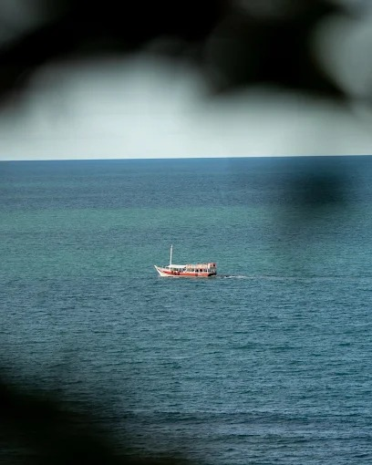

Filmes de casamento de luxo na Bahia
ExplorarNão apenas para registrar o que aconteceu, mas para preservar a atmosfera, a emoção e a grandiosidade de cada celebração.
Produção audiovisual para casamentos de luxo · Vagalume Produtorapágina
Vagalume Produtora
Criamos filmes que traduzem a essência, a atmosfera e a grandiosidade de cada celebração. Narrativa, estética e emoção, com olhar autoral e direção cuidadosa, para transformar momentos únicos em registros sofisticados e atemporais.
Seleção
Filmes e imagens
Ver todos no YouTubeBastidores
Por trás das câmeras
Direção, luz e uma equipe discreta que acompanha cada momento do dia. Um olhar de dentro de como os filmes da Vagalume ganham vida.
Vídeo com som

Sobre nós
Referência em produção audiovisual para casamentos de luxo
A Vagalume nasce de uma convicção: um casamento merece ser lembrado como foi sentido. Por isso unimos narrativa, estética e excelência técnica em filmes que preservam a grandiosidade de cada detalhe e a verdade de cada emoção.
Com sede em Eunápolis, na Bahia, acompanhamos celebrações onde elas acontecerem, com direção cuidadosa do primeiro contato à entrega do filme.
- 5,0nota no Google
- Luxofoco exclusivo em casamentos
- Autoraldireção e olhar próprios
Todo casamento é um filme.
Só precisa de quem saiba contá‑lo.
O que fazemos
Serviços
- 01
Filme de casamento
Um filme narrativo com cerimônia, festa e os detalhes que contam a sua história.
- 02
Teaser e trailer
Uma prévia cinematográfica para compartilhar com quem você ama.
- 03
Imagens aéreas
Drone para revelar a escala, o cenário e a atmosfera do lugar.
- 04
Destination wedding
Cobertura completa onde a celebração acontecer.
- 05
Conteúdo para redes
Cortes pensados para eternizar e divulgar os melhores momentos.
Como trabalhamos
Do primeiro contato ao filme final
Um processo claro e cuidadoso, para que o casal saiba o que esperar em cada etapa.
-
Passo 01
Conversa
- Entender o casal, a história e o estilo que vocês imaginam
- Conhecer o lugar, a data e o formato da celebração
- Alinhar expectativas e o que vai no filme
-
Passo 02
Direção
- Planejar roteiro e os momentos que não podem faltar
- Estudar locações, luz e horários
- Montar a equipe certa para o dia
-
Passo 03
Captação
- Equipe discreta, com olhar autoral
- Imagem e som cuidados em cada momento
- Atenção ao que realmente emociona
-
Passo 04
Entrega
- Edição com narrativa, cor e som
- Teaser e filme prontos para compartilhar
- Ajustes até o resultado ficar à altura do dia
Onde atendemos
Eunápolis e litoral sul
Somos de Eunápolis e filmamos casamentos em Trancoso, Arraial d’Ajuda, Porto Seguro e em destinos de toda a região. Conheça nosso trabalho em destination wedding.
Blog
Histórias, bastidores e dicas
Ver todos os artigos
Como escolher o filme de casamento ideal
Estilo, duração e entregas: o que pensar antes de contratar o filme do seu casamento na Bahia.

Teaser, trailer e filme completo: qual a diferença?
Entenda a função de cada formato de vídeo de casamento e descubra qual combina mais com você.

Destination wedding: o que planejar antes de filmar
Locação, luz, logística e equipe: o essencial para filmar um casamento fora da cidade, no litoral sul da Bahia.
Contato
Vamos transformar a história do seu casamento em filme?
Falar no WhatsAppCentro, Eunápolis · BA
45820-350